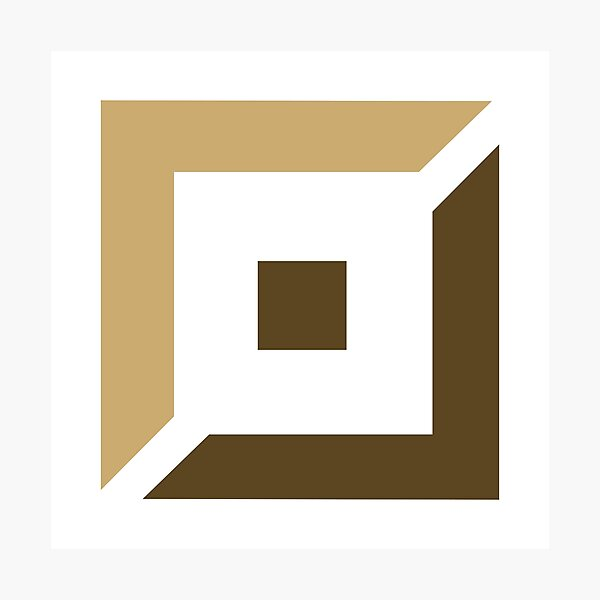

Welcome to Top Lane or as many would call it the island. People who enjoy playing champions that thrive in extended fighting styles are normally seen on this lane.
The reason why it's usually called "an island" is because it doesn't see much intervention from other roles in the early stages of the game. If bruisers and tanks are your thing, you've come to the right place!